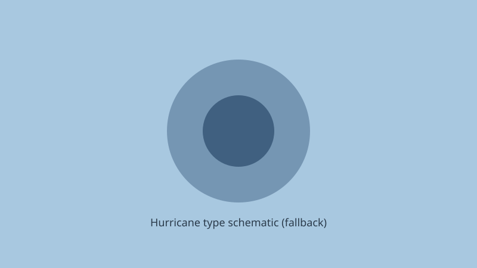

Eastern Pacific · tropics · 28 September 2026
Major Hurricane Polo closed on Mexico’s Baja California peninsula while Hurricane Nolo moved away from Hawaii.

What is agreed across desks
As of National Hurricane Center advisories early on 28 September 2026, Hurricane Polo was a Category 3 system with maximum sustained winds near 115–125 mph, located west of the southern tip of Baja California and moving generally northward. Hurricane warnings covered portions of the west and east coasts of Baja California Sur and segments of the mainland Sonora coast. Forecasters expected landfall on the peninsula late Monday near major-hurricane strength, followed by a crossing that could bring heavy rain and flooding risk to the Mexican mainland and, later, moisture into the U.S. Southwest.
Hurricane Nolo, after intensifying, was tracking west-northwest and away from the main Hawaiian Islands. Outer rain bands still carried a risk of flooding and mudslides on the Big Island; high-wind and high-surf advisories remained in effect for parts of the island chain into Sunday evening. Power outages in Hawaii were reported in the low tens of thousands at times, distinct from the Northeast nor’easter totals.
What is only a quote
Exact landfall intensity and precise rainfall totals inland are forecasts, not observations. Statements that Polo “could then hit the Mexican mainland” describe the most likely track ensemble; the cone of uncertainty remains standard NHC product language. Claims about U.S. Southwest impacts later in the week are contingent on the remnant moisture path.
Mechanism a reader needs
Eastern Pacific hurricanes form over warm water west of Central America and Mexico. Baja California’s topography funnels heavy rain into steep arroyos, producing flash flooding and debris flows even when the core weakens after landfall. Storm surge is a risk on the open Pacific side under onshore flow; the Gulf of California side experiences different surge geometry. Nolo’s track south of Hawaii is consistent with the climatological preference for systems to recurve or continue west once past the main islands; residual rainfall hazard is a function of outer-band structure and orographic lift on the Big Island’s windward slopes.
NHC intensity estimates combine satellite techniques (Dvorak and advanced microwave) with aircraft reconnaissance when available. Category numbers are 1-minute sustained winds at standard elevation; gusts and local topography can produce higher peak values at the surface. Warning polygons are drawn to capture the 5-day track uncertainty at a defined probability threshold; they are not guarantees of impacts at every point inside the line.
What this story is not
It is not a U.S. landfalling hurricane. It is not a claim that Hawaii experienced a direct major-hurricane strike. It is not a political story. The hero image is a reusable type satellite of a prior major Eastern Pacific hurricane chosen for structural similarity and license; it is not Polo.

Source articles and scores
| Outlet | Headline | T | N | C |
|---|---|---|---|---|
| NHC / public advisories | National Hurricane Center Eastern Pacific advisories (Polo) | 98 | 0 | 100 |
| AP / wire via multiple | Hawaii faces flood threat as Hurricane Nolo departs, Polo nears Baja | 94 | 0 | 100 |
| USA Today | Hurricanes Nolo and Polo: What to know | 92 | 0 | 98 |
Images: Wikimedia Commons type satellite via Special:FilePath; local SVG. Captions distinguish type from event. No crossorigin.